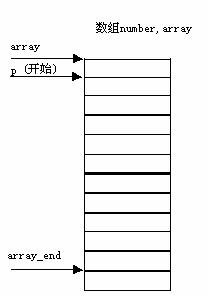

调用一个函数只能得到一个返回值，今用全局变量在函数之间“传递”数据。程序如下：
int max,min; /*全局变量*/
void max_min_value(int array[],int n)
{int *p,*array_end;
array_end=array+n;
max=min=*array;
for(p=array+1;p< array_end;p++)
if(*p>max)max=*p;
else if (*p< min)min=*p;
return;
}
main()
{int i,number[10];
printf("enter 10 integer umbers:\n");
for(i=0;i<10;i++)
scanf("%d",&number[i]);
max_min_value(number,10);
printf("\nmax=%d,min=%d\n",max,min);
}
1) 在函数max_min_value中求出的最大值和最小值放在max和min中。由于它们是全局，因此在主函数中可以直接使用。
2) 函数max_min_value中的语句：
max=min=*array;
array是数组名，它接收从实参传来的数组numuber的首地址。
*array相当于*（&array[0]）。上述语句与 max=min=array[0];等价。
3) 在执行for循环时，p的初值为array+1,也就是使p指向array[1]。以后每次执行p++,使p指向下一个元素。每次将*p和max与min比较。将大者放入max，小者放min。

4) 函数max_min_value的形参array可以改为指针变量类型。实参也可以不用数组名，而用指针变量传递地址。
int max,min; /*全局变量*/
void max_min_value(int *array,int n)
{int *p,*array_end;
array_end=array+n;
max=min=*array;
for(p=array+1;p< array_end;p++)
if(*p>max)max=*p;
else if (*p< min)min=*p;
return;
}
main()
{int i,number[10],*p;
p=number; /*使p指向number数组*/
printf("enter 10 integer umbers:\n");
for(i=0;i<10;i++,p++)
scanf("%d",p);
p=number;
max_min_value(p,10);
printf("\nmax=%d,min=%d\n",max,min);
}